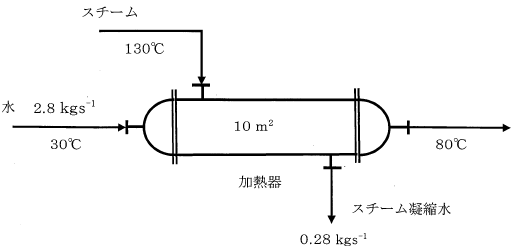

平成27年度 問30 化学プロセス
下図に示すような水の加熱器がある。この加熱器は伝熱面積10 m2、130℃のスチームを用いて、30℃の水2.8 kgs-1を80℃に加熱するためのものである。この加熱器を運転して出口水温が80℃と安定した状態になったときの加熱器のスチーム凝縮水量は0.28 kgs-1であった。このときの加熱器の総括伝熱係数として、最も適切な値はどれか。
なお、スチームの凝縮熱量は2.09×106 Jkg-1、水の比熱は4.18×103Jkg-1K-1一定とし、放熱等の熱ロスはないものとする。
また、伝熱量の一般式はQ＝UAΔtである。ここで、Qは伝熱量［W］、Uは総括伝熱係数［Wm-2K-1］、Aは伝熱面積［m2］、Δtは平均温度差［K］である。なお、自然対数ln2＝0.69とする。

正答は2番です。
伝熱量の一般式Q＝UAΔtに対して各値を代入することで求められます。
ただし熱交換器内は入口から出口までにおいて温度差が変化します。そのため対数平均温度差LMTDを計算しなければなりません。
対数平均温度差LMTD
$$ \begin{align}
LMTD&=\frac{\Delta T_{1}-\Delta T_{2}}{\ln \left(\Delta T_{1}/\Delta T_{2}\right)}\\\\
\end{align}$$
LMTD：対数平均温度差［K］
ΔT1：高温流体入口部における低温流体との温度差［K］
ΔT2：高温流体出口部における低温流体との温度差［K］
高温側出口温度はスチームの凝縮熱が用いられていることから温度は変わらず130℃です。
T1＝130－30＝100 K
T2＝130－80＝50 K
対数平均温度差LMTD＝(100-50) / ln (100/50)＝50 / ln2＝50 / 0.69＝72.5 Kです。
スチームの凝縮熱量2.09×106 Jkg-1より、伝熱量Qは2.09×106 Jkg-1 × 0.28 kgs-1＝5.85×105 Js-1＝5.85×105 Wです。
伝熱量の一般式Q＝UAΔtから総括伝熱係数Uは5.85×105 W /（10 m2 × 72.5 K） ＝807 Wm-2K-1です。最も近い値は8.1×102 Wm-2K-1です。